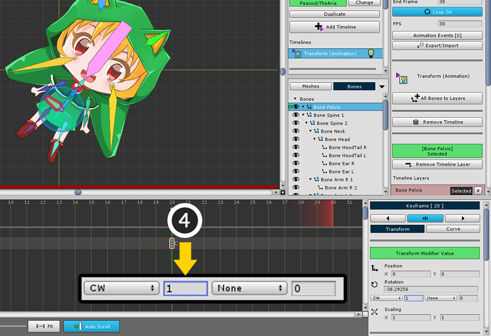
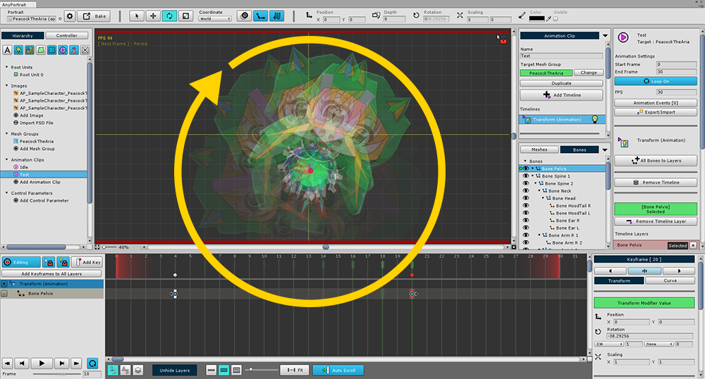

AnyPortrait > 메뉴얼 > 360도 이상으로 회전하기
360도 이상으로 회전하기
1.0.0

키프레임 애니메이션을 만들다보면 "회전"을 하는 경우가 많습니다.
회전을 하기 위해서는 위 이미지처럼 두개의 키프레임을 만들고 애니메이션을 하면 됩니다.
만약 회전하는 각도가 360도 이상이 되어야 하는 경우에는 보통의 방법으로는 불가능합니다.
모든 각도가 360도 이내로 정의되기 때문입니다.
이 페이지에서는 AnyPortrait에서 제공하는 360도 이상으로 회전하는 경우 각도를 보정해주는 기능을 설명합니다.

키프레임 애니메이션을 하면 일반적으로 위 화면과 같이 "두 값의 간격 중 작은 각도"로 회전을 합니다.

(1) 두 개의 키프레임 중 뒤에 위치한 키프레임을 선택합니다.
(2) Trasform 탭을 누르면 회전 각도 속성의 아래에 "None, 숫자"의 입력칸이 있습니다.
각각 "이전 프레임과의 각도 보정값", "다음 프레임과의 각도 보정값"입니다.
(3) 이전 프레임과의 각도 보정 설정을 CW (시계 방향 : Clockwise)으로 설정합니다.
(참고 : 만약 앞쪽 키프레임을 선택했다면 위와 정 반대로 "다음 프레임과의 각도 보정값"을 CCW로 설정하면 됩니다.)

뒤의 숫자 입력칸은 "회전 횟수"를 의미합니다.
여기서는 한바퀴를 돌릴 것이므로 (4) 회전 횟수에 1을 입력합니다.

한바퀴 회전하는 애니메이션을 볼 수 있습니다.